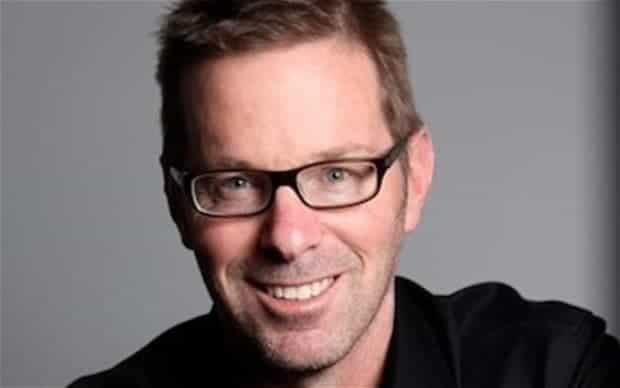
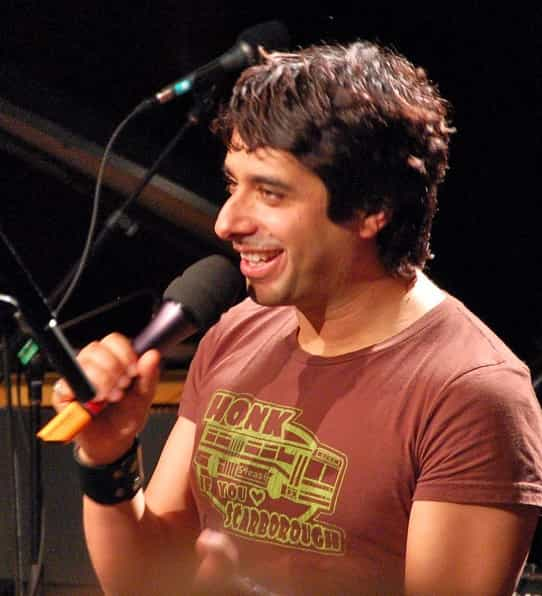

As Vox Day wrote in his book SJWs Always Lie, SJWs always project, and the extraordinary downfall of director and screenwriter Joss Whedon in the past week is the latest evidence of that. Whedon, best known for his outspoken feminism and for creating TV shows and movies such as Buffy the Vampire Slayer that purported to celebrate female empowerment, was recently outed by ex-wife Kai Cole as a serial philanderer who psychologically manipulated her into having a nervous breakdown:
Joss admitted that for the next decade and a half, he hid multiple affairs and a number of inappropriate emotional ones that he had with his actresses, co-workers, fans and friends, while he stayed married to me. He wrote me a letter when our marriage was falling apart, but I still didn’t know the whole truth, and said, “I’ve never loved anyone or wanted to be with anyone in any real or long-term way except for you ever. And I love our life. I love how you are, how we are, who you are and what we’ve done both separately and together, how much fun we have…” He wanted it all; he didn’t want to choose, so he accepted the duality as a part of his life.
These revelations couldn’t have come at a worse time for Whedon, barely a month after his unused script for the Wonder Woman movie was leaked to the public. Whedon was lambasted by feminists for depicting Wonder Woman as a frail, defenseless damsel in distress who constantly needed to be saved by the men around her, which not only makes for bad storytelling, but is a complete 180 from the actual Wonder Woman movie that was released in June.
Joss Whedon’s adultery is yet another example of the duplicitous and narcissistic nature of male feminists. Contrary to the fake news media’s claims that neomasculine and anti-feminist men are predatory and misogynistic, it is almost always male feminists such as Whedon who turn out to be the biggest abusers and users of women. Any man who identifies as a feminist is a liar who should be shunned and avoided by both men and women.
A Brief History Of Male Feminist Users
Joss Whedon’s behavior towards the opposite sex is the norm and not the exception when it comes to male feminists. Much in the same way that Jesus warned us against listening to “hypocrites” who loudly and piously proclaimed their faith as a compensation mechanism, men who can’t shut up about “mansplaining” and “equal rights” are doing so in order to hide their own demons. Over the past decade, prominent male feminists have been repeatedly unmasked as rapists, abusers, and cheaters, behavior far worse than the “sexist” men they attack.
Whedon’s collapse is reminiscent of the fall of Hugo Schwyzer, formerly one of the world’s most prominent male feminists. A photogenic, articulate community college professor from southern California, Schwyzer became famous by presenting himself as a “reformed bad boy” who had become a feminist after a lifetime of dissolute behavior, including sleeping with his students and attempting to murder an ex-girlfriend.
Beloved by feminists and leftists, Schwyzer was a frequent contributor to prominent websites such as Jezebel and The Atlantic, and even led L.A.’s SlutWalk in 2011. He used his media megaphone to push positions that were extreme even by feminist standards, such as advocating that men allow their girlfriends/wives to penetrate them with strap-ons and proclaiming that men should not date women younger than them.
Schwyzer’s world came crashing down came four years ago, when it was revealed that he had been cheating on his wife with a porn star. In the aftermath, Schwyzer went on a manic Twitter rant, revealing that he had falsified his academic credentials, had been sleeping with his female students, and more. Not long after that, he attempted suicide by crashing into a car while drunk, earning himself a felony DUI. Schwyzer was finally forced to resign from his teaching position after the administration announced an investigation into his affairs with students.
Another notable male feminist who abused women is Jian Ghomeshi, the disgraced former host of CBC Radio’s arts program Q. Three years ago, Ghomeshi was terminated by CBC Radio and arrested after over a dozen women alleged that he had beaten and raped them. While Ghomeshi was ultimately acquitted of the charges, the revelations of his creepy sexual behavior ruined his reputation and kept him from returning to his previous role in Canadian public life.
Another example of a typical male feminist is Anthony Weiner, a former Democratic congressman and the husband of Hillary Clinton’s chief of staff, Huma Abedin. Weiner was famously forced to resign from Congress after being caught sending pictures of his penis to random women. Prior to his fall from grace, Weiner had been feted by feminists for his crybaby speeches accusing the Republicans of trying to roll back women’s rights.
One of the most remarkable aspects of male feminists is how they are completely unable to take responsibility for their actions. In the case of Joss Whedon, when Cole confronted him about his adultery, he effectively blamed the patriarchy for his actions, all the while using her as a prop to silence critics who were skeptical of his commitment to feminism:
Fifteen years later, when he was done with our marriage and finally ready to tell the truth, he wrote me, “When I was running ‘Buffy,’ I was surrounded by beautiful, needy, aggressive young women. It felt like I had a disease, like something from a Greek myth. Suddenly I am a powerful producer and the world is laid out at my feet and I can’t touch it.” But he did touch it. He said he understood, “I would have to lie — or conceal some part of the truth — for the rest of my life,” but he did it anyway, hoping that first affair, “would be ENOUGH, that THEN we could move on and outlast it.”
As Roosh V Forum member AnonymousBosch has written, Whedon’s sexual pathologies are on full display in Buffy the Vampire Slayer and other works he has created. It’s almost certain that other women will come forward in the future revealing how he has used them, and like Ghomeshi and Schwyzer, he may end up facing criminal charges for his actions.
Masculine Men Are The Only Trustworthy Men
Joss Whedon’s downfall—and the rapidity with which his female feminist fans have turned their backs on him—is living proof that it does not pay for a man to be a feminist. Despite feminists’ proclamations that they want men who are sensitive and attuned to their “needs,” they repeatedly disown and reject men who espouse the same beliefs that they do. Feminist women are still women, and as much as they may deny it, they want real men, men with balls, men who won’t put up with their power games and emotions.
Indeed, given the track record of male feminists so far, women are right to distrust them. Joss Whedon and other men like him are psychos and predators who mouth feminist platitudes in order to find new victims to prey on. Any “man” who identifies as a feminist is likely a narcissist or psychopath who should be avoided.
Read More: Why Feminists Hate Male Sexuality


{kind=link}